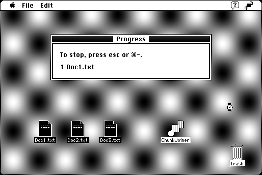

Download
chunkjoiner22.zip (143K) ChunkJoiner 2.2 repackaged into a zipped hfs disk image and checksum file. The disk image can be mounted with Mini vMac.
chunkjoiner22.bin (143K) ChunkJoiner 2.2 in the original format.
copyright: Fabrizio Oddone
mod date: Oct 29, 1997
license: shareware
official url :
ChunkJoiner
Concatenates files. For “System 7 or later”.

If you find these downloads useful, please consider helping the Gryphel Project, which hosts them.
Here are the md5 checksums for the downloads, signed with Gryphel Key 5:
--------- GRY SIGNED TEXT --------- 359155faa01da094d477ff901eded365 chunkjoiner22.zip 135b89128ef12f94d3b4af43cb5bea23 chunkjoiner22.bin ------- BEGIN GRY SIGNATURE ------- Gry/4Xa8CFcUzxdN/MBP+0qI7dTluqGtpd+nBKEBc4l1R9UpAaIO+bCyrNolkMjx 47+67NChiI6gLYrzkgJhYE97m8MpJo95oSVrPb6FT495YIp4obSyGlSRX3xArs8J HCPXwn/qmxDbLg1s1ie4aegvmOSFh13AE34zvBaKTrvP1bo3PdbaEguxYxxPSbgc -------- END GRY SIGNATURE --------